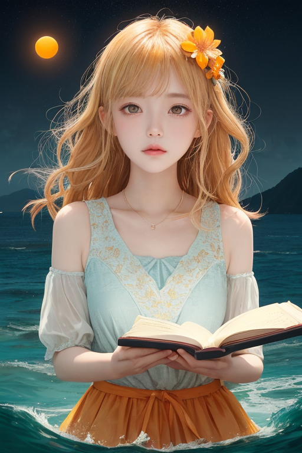
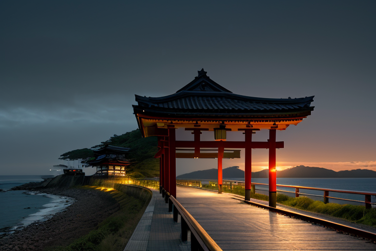
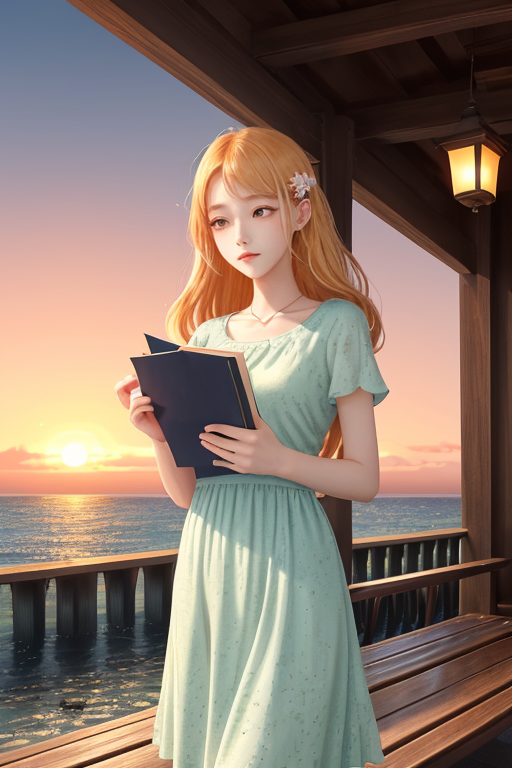
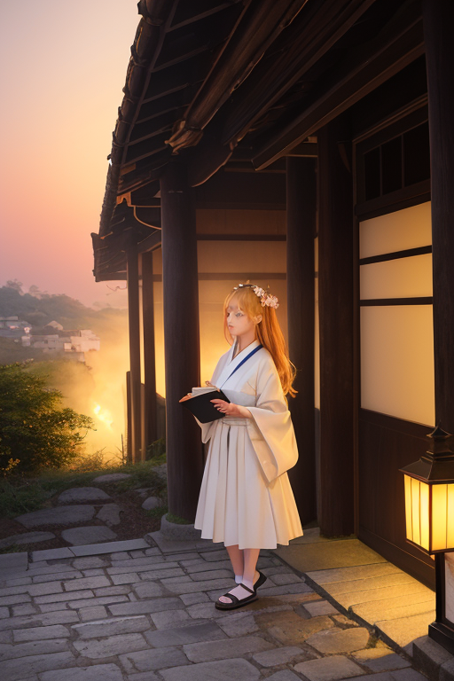

第一章 現実の愛媛
あなたはまだ気づいていない。この土地にも、王がいることを。
しまなみ海道の橋桁は、瀬戸内の青を幾筋にも裁断する。海は穏やかだが、その下ではプレートが忍び寄り、歪みが蓄積されていた。下灘駅のホームに立つと、水平線が果てしなく続き、ここが陸の終わり、海の始まる境界であることを肌で感じる。港町今治のタオル工場では、柔らかな布が織られ、松山城の石垣は、幾度の震えに耐えてきた無数の石の記憶を沈黙で抱えている。
この土地の歪みは、海からのものだ。ゆっくりと、しかし確実に押し寄せる力。王はそれを知っている。エヒメリア・リリックは、柑橘の畑が段々に広がる丘の上に立っていた。彼女の目には、目に見えない歪みの波紋が、海から陸へと押し寄せる様が映る。言葉を愛する王は、救いとは何か、と問い続ける。揺れが来る。彼女は指をわずかに動かす。主席妖精リリシアが発する言霊の波が、地中を伝わる衝撃の先端に触れ、その鋭さをほんの少し、鈍らせる。崩れは防げない。だが、転がる石の速度を、ほんの一瞬、遅くできる。それが、この土地の現実だった。

第二章 歪みの兆候
しまなみ海道を渡る風は、いつもより冷たく、潮の香りに微かな鉄の気味が混じっていた。瀬戸内の海境に、外部の歪みがじわりと染み入ってくる。遠くの海溝で生まれた巨大な力が、海水を媒介に、この穏やかな多島海を伝い、愛媛の地を揺さぶろうとしていた。
エヒメリア・リリックは下灘駅の無人ホームに佇み、水平線を見つめていた。彼女の耳には、海の底で軋む岩盤の声、押し寄せる水圧の重たい唸りが届く。それは言葉以前の、荒々しい力の咆哮だった。彼女はそっと目を閉じた。傍らで、柑橘の妖精ミカナリアが小さな光をちらつかせ、沿岸に届く歪みの波動を、可能な限り拡散させようとしていた。
「言葉は、これに届くでしょうか」
リリシアが囁いた。詩の妖精の声は、海鳴りにかき消されそうだった。
王は答えた。「届かなくとも、紡がねばならない。ここに生きる人々の、その後のために」
彼女の心には、この土地が育んだ言葉、漱石の諧謔や子規の切実な一句が去来した。それらは災害を止めはしない。しかし、止められないものとどう向き合うか、その姿勢を、ほんの少しだけ変える力はあるかもしれない。

第三章 王の葛藤
下灘駅の無人ホームに、夕陽が水平線へ沈んでいく。王は、海を隔てた向こうに、かつて多くの命を奪った津波の記憶を感じ取っていた。妖精たちは、言霊波と温暖波を微かに調整し、次の歪みの到来を数秒遅らせる準備を整える。しかし、王の心には、いつになく重い逡巡があった。
「届かない言葉を、なぜ紡ぎ続けるのか」
内子の町並みで出会った古老の、震災で全てを失った後の無念の句が、彼女を縛った。完璧な救済など、王にもできない。ならば、無力な言葉など、かえって残酷ではないか。みかん畑の斜面に灯る家々の明かりを見つめながら、彼女は初めて、自らの役割を「無意味」と呼びたくなった。
しかし、松山城の石垣に触れた時、掌に伝わったのは、幾度の崩落と再建を繰り返した、しなやかで強靭な意志だった。拒絶も、受容も、まだ決められずにいた。

第四章 妖精との対話
下灘駅の、海へと溶け込むようなホーム。夕暮れ時、リリシアが隣に立った。
「王様は、言葉が『救う』ことを求めすぎています」
妖精の声は、潮風に混じって聞こえた。
「私たちの調整は、救済ではありません。ほんの少しの『間』を作ること。津波を遅らせ、逃げる時間を数秒だけ増やすように。言葉だって、同じです」
水平線が茜色に染まる。リリシアは、駅のベンチに腰かけた古老の背中を見つめた。
「あの方は、震災で家族を亡くしました。私の言霊波は、悲しみを消せない。でも、ある朝、ふと口をついて出た一句が、涙の重さを、ほんの少しだけ軽くした。それが『救い』でしょうか？ 違うと思います。ただ、次の一歩を踏み出すための、ほんのわずかな『間』が生まれただけです」
エヒメリアは黙って聞いていた。
「救う言葉も、傷つける言葉も、すべては出会い。そして、すべてはやがて別れます。でも」リリシアが振り返り、橙の瞳を光らせた。「出会いが痕跡を残すように、言葉も、確かに何かを動かす。それが、私たちの仕事の全てです」
海の向こう、しまなみ海道の灯りが一つ、また一つと灯り始めた。境界線の上で、光は確かに、こちらへと届いていた。

第五章 微調整と余韻
松山城の石垣に、夕陽が最後の橙を染めていた。エヒメリアは手にした一冊の文庫本——夏目漱石の『坊っちゃん』——の頁をそっと閉じた。本の余白には、訪れた人々の思いが、目に見えない言葉となって滲んでいる。賛辞も、批判も、共感も、すべてがこの土地の「感情密度」をかすかに高め、それはやがて地殻の微かな軋みをも調整するエネルギーとなる。
彼女は城を下り、道後温泉の街へと向かった。湯けむりの向こうで、地元の老人が孫にじゃこ天の味を教え、観光客が今治タオルの感触に驚いている。異なる文化が交差するこの瞬間、ほんの少しの違和感が生まれる。エヒメリアはそっと息を吐く。妖精リリシアが放つ言霊波が、その違和感を和らげ、互いの理解への「間」を創り出す。ミカナリアが柑橘の甘い香りを漂わせ、温もりを添える。
救いとは、劇的な変化ではない。このように、衝突しそうなものをかすかにずらし、悲しみを消さずともその深さをほんの少し浅くし、喜びの持続を一瞬だけ長引かせること。言葉が完全な救いにならなくても、ほんの少しの「ずれ」を生むことで、次の一歩を踏み出す余地を残す。彼女は湯の町の喧騒を背に、静かに微笑んだ。
あなたの町にも、王がいる。